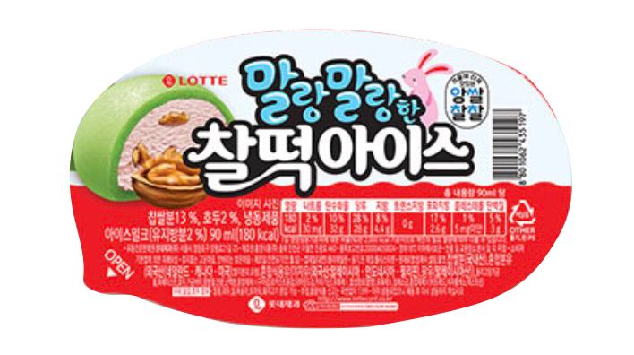

안녕하세요 오늘은 코딩 2일차예요.
오늘은 홈페이지 이름 바꾸는 법이랑 사진 넣는 법을 바꾼 기념으로 제 증명사진이랑 홈페이지 이름을 바꿔봤어요.

어때요? 좀 잘나왔죠? 롯데홈쇼핑에서 가져왔어요. 거기가 증명사진 맛집이거든요.
이렇게 1일차 2일차 일기쓰면 중간에 선을 넣어서 분리 시키고 싶은데
어떻게 해야하는 지 모르겠어요 쌤이 아직 거기까진 안 알려주셨거든요. 점점 태그들이 어려워져요.
목록 리스트 작성하는 방법도 알았고
다른 링크 태그하는 방법도 알게 됐어요 ㅎㅎ 본문에 몇개의 홈페이지 링크가 태그 되어있을까요?ㅋㅋ
오늘 홈페이지 웰컴 페이지도 만들건가봐요
머리가 터질것 같지만 재밌으니까 참아요.